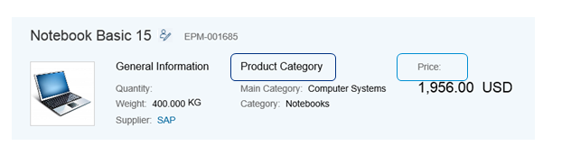

Data Points
A data point represents a single point of data. It is typically a number but can also be textual, for example, a status value.
The image below shows the data points Product Category and Price in the object page header.

Object Page: DataPointsDisclaimer: The below video  is not part of the SAP product documentation. Please read the legal disclaimer for video links before viewing this video.
is not part of the SAP product documentation. Please read the legal disclaimer for video links before viewing this video.
is not part of the SAP product documentation. Please read the legal disclaimer for video links before viewing this video.
Code Samples
UI.Reference Facet
If you add a UI.ReferenceFacet that points to UI.DataPoint, the title and value of the UI.DataPoint will be rendered.
<Annotation Term="UI.HeaderFacets">
<Collection>
<Record Type="UI.ReferenceFacet">
<PropertyValue Property="Label" String="{@i18n>@TechnicalData}"/>
<PropertyValue AnnotationPath="@UI.FieldGroup#TechnicalData" Property="Target"/>
</Record>
<Record Type="UI.ReferenceFacet">
<PropertyValue AnnotationPath="@UI.DataPoint#Price" Property="Target"/>
</Record>
<Record Type="UI.ReferenceFacet">
<PropertyValue AnnotationPath="@UI.DataPoint#ProductCategory" Property="Target"/>
</Record>
<Record Type="UI.ReferenceFacet">
<PropertyValue Property="Label" String="Employee"/>
<PropertyValue AnnotationPath="to_Supplier/@Communication.Contact" Property="Target"/>
</Record>
</Annotation>
UI.DataPoint
Each UI.DataPoint annotation term must point to a qualifier, as shown below:
<Annotation Term="UI.DataPoint" Qualifier="Price"> <Record> <PropertyValue Property="Value" Path="Price"/> <PropertyValue Property="Title" String="Price"/> </Record> </Annotation> <Annotation Term="UI.DataPoint" Qualifier="ProductCategory"> <Record> <PropertyValue Property="Value" Path="ProductCategory"/> <PropertyValue Property="Title" String="Category"/> </Record> </Annotation>